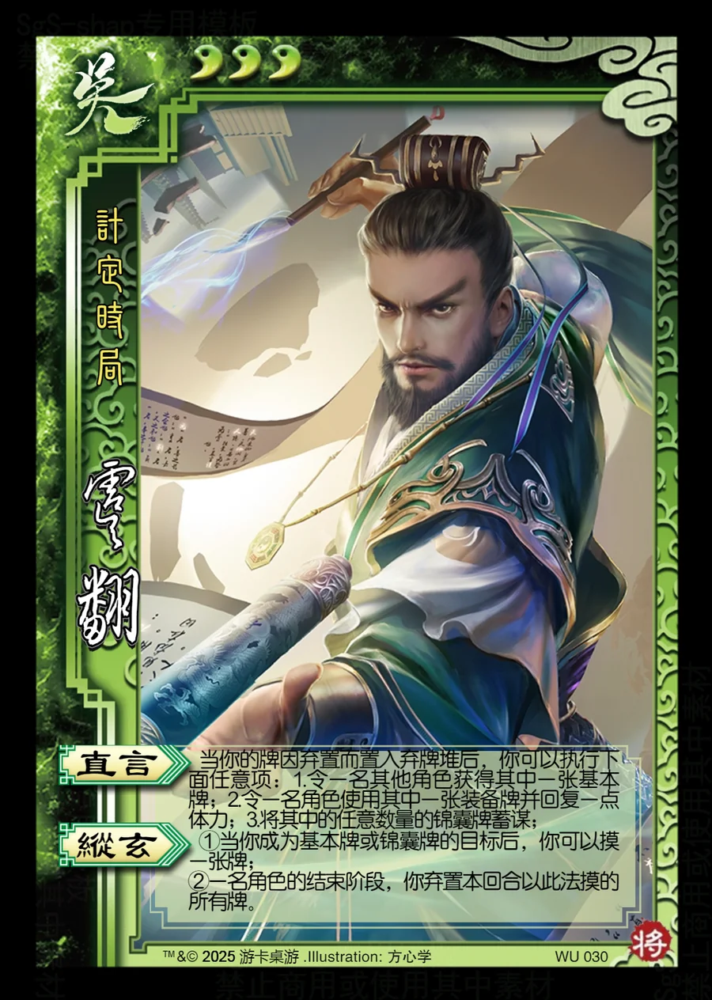

点击卡面查看大图
吴
虞翻
♥3计定时局
直言
当你的牌因弃置而置入弃牌堆后，你可以执行下面任意项：1.令一名其他角色获得其中一张基本牌；2.令一名角色使用其中一张装备牌并回复一点体力；3.将其中的任意数量的锦囊牌蓄谋；
纵玄
①当你成为基本牌或锦囊牌的目标后，你可以摸一张牌；
②一名角色的结束阶段，你弃置本回合以此法摸的所有牌。

点击卡面查看大图
计定时局
当你的牌因弃置而置入弃牌堆后，你可以执行下面任意项：1.令一名其他角色获得其中一张基本牌；2.令一名角色使用其中一张装备牌并回复一点体力；3.将其中的任意数量的锦囊牌蓄谋；
①当你成为基本牌或锦囊牌的目标后，你可以摸一张牌；
②一名角色的结束阶段，你弃置本回合以此法摸的所有牌。